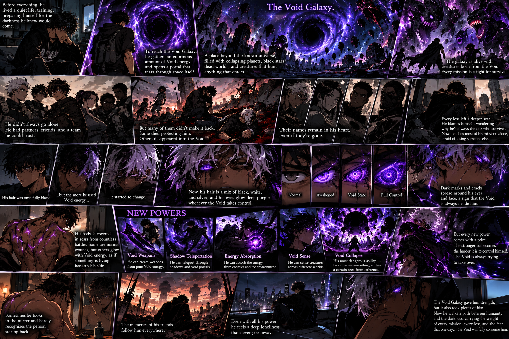

The longer the Voider stayed connected to the Void Galaxy, the more it began changing his body. His once-dark hair slowly started turning white and silver, beginning at the ends and spreading every time he pushed his powers too far. His eyes changed too, glowing deep purple whenever the Void took control, with dark cracks appearing around them. New scars covered his chest, arms, and back from battles, but some were different they glowed with Void energy as if something was living underneath his skin.His powers also became much stronger. He learned to create Void weapons, teleport through shadows, sense creatures across different worlds, and absorb energy from his enemies. Eventually, he discovered his most dangerous ability: Void Collapse, the power to erase everything within a certain area from existence. But every new ability came with a price. The stronger he became, the harder it was to control himself. Sometimes he would look into the mirror and barely recognize the person staring back. The scars, changing hair, glowing eyes, and growing darkness became permanent reminders of every mission he survived and every person he lost.
